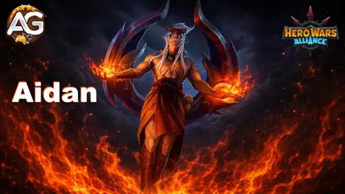
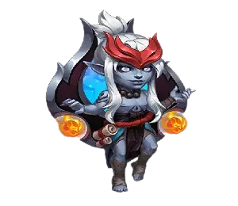
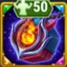
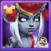
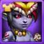
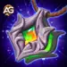

Aidan Guide: Relics & Skills for Hero Wars Alliance
- By: Alexandre Domingos. .
Aidan can turn a team on the edge of defeat into a team that refuses to fall. In this Hero Wars Alliance guide, I break down his healing, shields, and legendary relic so you can see where that survival comes from; and which upgrades deserve your resources first.
What catches my attention is how his kit connects sacrifice with recovery. Friendly skill damage creates more healing targets, Kayla gets another chance through resurrection, and the relic adds protection and Intelligence growth. The real decision is whether your Aidan needs stronger healing or enough durability to keep delivering it.


Aidan Table of Contents
- Who Is Aidan?
- Combat Role and Ratings
- Pros and Cons
- Talisman Max Stats Comparison
- Talisman Guide
- Legendary Relic Skills and Upgrade Priority
- Realm Skills
- Best Skins and Upgrade Priority
- Artifact Evolution Priority
- Glyph Evolution Priority
- How to Counter Aidan
- Aidan Synergies
- Best Teams and Old Popular Teams
- Alexandre's Final Verdict
Who Is Aidan in Hero Wars Alliance?
Aidan is a back line Healer from the Way of Chaos. His role is to keep allies fighting through healing, temporary Health increases, and emergency shields, with additional resurrection support for Kayla.

- Main Class: Healer
- Position: Back Line
- Main Stat: Intelligence
- Faction: Way of Chaos
- Key Synergy: Kayla, Chaos allies, and teams that take damage from friendly skills.
Fire Embrace heals allies damaged by friendly skills since its previous cast. That makes friendly sacrifice part of his recovery cycle. Chaos allies receive stronger healing from Fire Embrace and several relic effects, while Kayla has dedicated resurrection mechanics.
My first priority is keeping Aidan alive. Strong healing formulas only help while he can keep casting, and his own ultimate spends part of his maximum Health.
Aidan Pros and Cons - Hero Wars Alliance
✅ Pros
- Heals multiple allies after friendly skill damage.
- Stronger healing for Chaos heroes.
- Emergency shields protect low-Health allies.
- Dedicated resurrection support for Kayla.
- Relic upgrades add protection, healing, and stacking Intelligence.
❌ Cons
- Ultimate spends 20% of his own maximum Health.
- Limited direct damage and no listed crowd control.
- Kayla resurrection needs Kayla on the team.
- Shield protection lasts only 4 seconds.
- Intelligence growth needs friendly skill damage to reach its threshold.
Aidan - Talisman Max Stats Comparison
These maximum-build values are the starting point for the calculations below. They are shown before temporary in-battle Health and Intelligence gains; the relic stat gains are not added again.
| Stat | Talisman 1: Talisman of Ashes |  Talisman 2: Talisman of Relentlessness |
|---|---|---|
| 17,843 | 15,843 | |
| 3,679 | 3,679 | |
| 4,137 | 4,137 | |
| 1,129,442 | 1,315,480 | |
Physical Attack | 37,314 | 35,314 |
| 230,375 | 203,585 | |
| 39,840 | 39,840 | |
| 43,200 | 41,200 | |
Toughness | 3,380 | 7,780 |
| 278,122 | 279,449 |
Aidan Talisman Guide - Hero Wars Alliance
You choose one talisman for battle. Only the equipped talisman's bonuses apply; owning both does not combine their stats. Unlike skin bonuses, this choice changes which benefits Aidan brings into the fight. Evaluate the three reroll slots by their combined total.
1 - Talisman of Ashes

| Talisman | Main Stat Bonus |
|---|---|
| Talisman of Ashes | Intelligence +2,000 |
| Slot 1 | Slot 2 | Slot 3 | Total Reroll Bonus |
|---|---|---|---|
| Magic Attack +6,600 | Magic Attack +6,600 | Magic Attack +6,600 | Magic Attack +19,800 |
The Intelligence bonus adds +6,000 Magic Attack, +2,000 Magic Defense, and +2,000 Physical Attack. Together with the combined reroll bonus of +19,800 Magic Attack, Ashes strengthens Fire Embrace, self-healing, and the relic effects that scale with Magic Attack.
2 - Talisman of Relentlessness

| Talisman | Main Stat Bonus |
|---|---|
| Talisman of Relentlessness | Toughness +4,000 |
| Slot 1 | Slot 2 | Slot 3 | Total Reroll Bonus |
|---|---|---|---|
| Health +60,500 | Health +60,500 | Health +60,500 | Health +181,500 |
Relentlessness adds +4,000 Toughness and a combined reroll bonus of +181,500 Health. The supplied maximum build reaches 1,315,480 Health and 7,780 Toughness. More maximum Health increases Phoenix Ritual's Health-based values; Toughness helps resist enemy damage below 50% Health, but does not reduce Aidan's self-damage.
Which Aidan Talisman Should You Use?
My default for stronger healing is Talisman of Ashes. Its 230,375 Magic Attack gives Fire Embrace 73,912.5 healing per regular target, versus 65,875.5 with Relentlessness. It also improves the level 10 damage reduction and the initial Intelligence gain from Price of Wisdom. The talisman guide also recommends Aidan's first talisman.
I would switch to Relentlessness when Aidan needs more durability. It offers 186,038 more maximum Health and 4,400 more Toughness in the supplied complete builds. Phoenix Ritual's allied Health increase rises from 228,288.4 to 265,496, but its self-cost also rises from 225,888.4 to 263,096. The Toughness benefit is conditional on low Health and the attacker's main stat; it is not a fixed damage reduction percentage.
Alexandre Tips: If Aidan survives but the team needs more recovery, start with Ashes. If he falls before he can keep the healing cycle going, try Relentlessness. Judge the result by whether he keeps the team fighting, rather than by Total Power alone.
Aidan Legendary Relic Skills Upgrade Priority - Hero Wars Alliance
Understand Aidan's healing, shields, and relic upgrades, compare both talismans, and invest first in the skills that keep your team alive in battle.
Keep the visual skill order below. My recommended base-skill investment order is Fire Embrace, Flame Shield, Phoenix Ritual, then Bonds of Fire. Relic skills unlock at their required relic levels; their priority labels describe investment value rather than a separate manual unlock order.
All calculations use the maximum stats above: 230,375 Magic Attack and 1,129,442 Health with Ashes, or 203,585 Magic Attack and 1,315,480 Health with Relentlessness. Decimal results show the formula before any in-game rounding. Team Health and later in-battle buffs can change the actual result.
| Relic Level | Skill Unlock or Enhancement |
|---|---|
| 1 | Phoenix's Pact: Kayla resurrection and allied healing. |
| 10 | Fire Embrace: damage reduction per attack for healed allies. |
| 20 | Flame Shield: healing when the shield is removed. |
| 30 | Price of Wisdom: stacking Intelligence from friendly skill damage. |
Total relic stat gains at Level 30: Health +215,429 and Magic Attack +64,542. These are build stat gains, separate from Price of Wisdom's temporary battle stacks.
1st - Phoenix Ritual (Ultimate)
In-game description: Aidan spends 20% of his maximum Health to raise allied current and maximum Health. The affected allies burn for 8 seconds, losing the additional Health over that duration. Revives Kayla if she has fallen. His skills stop damaging allied heroes below 25% Health.

Skill Explanation: Aidan pays part of his own Health to give allies a temporary buffer. The allied increase is 20% Health + 2400; the self-cost is 20% of his maximum Health. The extra allied Health burns away over 8 seconds, so this is temporary protection rather than a permanent Health upgrade. If Kayla has fallen, the skill revives her. His skills stop damaging allied heroes below 25% Health; that safeguard does not make them immune to enemies.
Formula with Talisman 1: Talisman of Ashes
- Allied current and maximum Health increase: 20% Health + 2400 = 228,288.4 (0.20 × 1,129,442 + 2,400)
- Aidan self-cost: 20% maximum Health = 225,888.4 (0.20 × 1,129,442)
Formula with Talisman 2: Talisman of Relentlessness
- Allied current and maximum Health increase: 20% Health + 2400 = 265,496 (0.20 × 1,315,480 + 2,400)
- Aidan self-cost: 20% maximum Health = 263,096 (0.20 × 1,315,480)
Skill Animation Info: Burn duration: 8 seconds. Total burn removes the bonus Health granted. Keywords: Health Increase, Burn, Resurrection, Self-Damage.
Evolution Priority: High – The temporary Health buffer and Kayla revival can rescue a fight. Keep it developed, while giving regular healing and emergency shielding first access to limited resources. The self-cost means it works best inside a reliable recovery cycle.
2nd - Fire Embrace
In-game description: Restores Health to the ally with the lowest Health percentage and to allies damaged by friendly skills since the previous cast. Chaos heroes receive stronger healing.

Skill Explanation: Think of this as Aidan's recovery engine. It heals the ally with the lowest Health percentage and allies hurt by friendly skills since its previous cast. Regular healing is 30% Magic Attack + 4800; Chaos healing is 60% Magic Attack + 9600. The Chaos formula is double the regular formula, making faction synergy especially valuable.
Formula with Talisman 1: Talisman of Ashes
- Regular ally healing: 30% Magic Attack + 4800 = 73,912.5 (0.30 × 230,375 + 4,800)
- Chaos ally healing: 60% Magic Attack + 9600 = 147,825 (0.60 × 230,375 + 9,600)
Formula with Talisman 2: Talisman of Relentlessness
- Regular ally healing: 30% Magic Attack + 4800 = 65,875.5 (0.30 × 203,585 + 4,800)
- Chaos ally healing: 60% Magic Attack + 9600 = 131,751 (0.60 × 203,585 + 9,600)
Fire Embrace (Enhanced Skill) - Legendary Relic: Level 10
In-game description: Allies healed by Fire Embrace take less damage from each attack for 8 seconds.

Skill Explanation: Healed allies also take less damage from each attack for 8 seconds. The reduction is 10% Magic Attack: a flat amount calculated from Aidan's Magic Attack, not a 10% reduction of the enemy's damage. This gives the healing cast a second job: helping the healed ally survive the following attacks.
Formula with Talisman 1: Talisman of Ashes
- Damage reduction per attack: 10% Magic Attack = 23,037.5 (0.10 × 230,375)
Formula with Talisman 2: Talisman of Relentlessness
- Damage reduction per attack: 10% Magic Attack = 20,358.5 (0.10 × 203,585)
Skill Animation Info: Legendary protection duration: 8 seconds. Keyword: Healing. Legendary enhancement unlocks at Relic Level 10.
Evolution Priority: Very High – This is my first base-skill investment: it restores Health across the friendly sacrifice cycle, and its level 10 relic enhancement adds protection after healing. Stronger recovery keeps both Aidan and the damage dealers active.
3rd - Bonds of Fire
In-game description: Takes 2.5% of maximum Health from the ally with the highest Health percentage and from other allies above 80% Health. Aidan gains that amount as current and maximum Health and heals himself.

Skill Explanation: Aidan takes 2.5% of maximum Health from the ally with the highest Health percentage and other allies above 80% Health. He gains the total sacrificed amount as current and maximum Health, then heals himself for 50% Magic Attack + 10000. This helps him keep going and gives Fire Embrace more friendly-damage targets.
The Health transfer depends on the affected allies: Total Health gained = sum of (0.025 × each affected ally's maximum Health). Use their actual Health values; Aidan's own maximum Health cannot determine that total by itself.
Formula with Talisman 1: Talisman of Ashes
- Aidan self-healing: 50% Magic Attack + 10000 = 125,187.5 (0.50 × 230,375 + 10,000)
Formula with Talisman 2: Talisman of Relentlessness
- Aidan self-healing: 50% Magic Attack + 10000 = 111,792.5 (0.50 × 203,585 + 10,000)
Skill Animation Info: Sacrifice: 2.5% of affected allies' maximum Health. Additional ally threshold: above 80% Health. Keywords: Healing, Health Increase, Self-Damage.
Evolution Priority: Medium – The self-heal supports Aidan's survival, but direct allied healing and emergency shielding usually deserve investment first. The fixed 2.5% transfer depends on ally Health, so do not treat it as a larger percentage simply because you upgrade this skill.
4th - Flame Shield
In-game description: Shields Aidan or an ally who was present at the start of combat when their Health falls below 30%. The shield absorbs physical and magical damage for 4 seconds and has a separate 15-second cooldown for each hero.

Skill Explanation: When Aidan or an eligible ally drops below 30% Health, a shield absorbs physical and magical damage for 4 seconds. Its durability is 16% of the combined maximum Health of allied heroes. Each hero has a separate 15-second cooldown, so one ally triggering a shield does not put every ally's shield on cooldown.
To calculate durability, use Shield = 0.16 × combined allied maximum Health. Both talismans need the other allies' maximum Health to produce a complete number. At the same starting team composition, Relentlessness adds 29,766.08 shield durability (0.16 × 186,038) through Aidan's extra Health alone.
Flame Shield (Enhanced Skill) - Legendary Relic: Level 20
In-game description: When Flame Shield is removed, the protected ally receives healing. Chaos heroes receive more healing.

Skill Explanation: When the shield is removed, the protected ally receives healing: 30% Magic Attack for a regular ally or 60% Magic Attack for a Chaos ally. The shield buys time at low Health; this follow-up healing helps the protected hero recover after that protection ends.
Formula with Talisman 1: Talisman of Ashes
- Regular ally healing: 30% Magic Attack = 69,112.5 (0.30 × 230,375)
- Chaos ally healing: 60% Magic Attack = 138,225 (0.60 × 230,375)
Formula with Talisman 2: Talisman of Relentlessness
- Regular ally healing: 30% Magic Attack = 61,075.5 (0.30 × 203,585)
- Chaos ally healing: 60% Magic Attack = 122,151 (0.60 × 203,585)
Skill Animation Info: Trigger: below 30% Health. Duration: 4 seconds. Cooldown: 15 seconds per hero. Absorbs: physical and magical damage. Eligible allies must have been present at the start of combat. Legendary enhancement unlocks at Relic Level 20.
Evolution Priority: Very High – A shield arrives precisely when an ally is close to falling. I place it second for base-skill investment because it complements Fire Embrace, and the level 20 follow-up heal adds recovery to that emergency protection. Its durability still depends on team Health, not only skill level.
5th - Phoenix's Pact (New Skill) - Legendary Relic: Level 1
In-game description: Every 15 seconds, if allied Kayla is dead, Aidan revives her and then heals his allies. Chaos heroes receive more healing.

Skill Explanation: Every 15 seconds, this skill can revive Kayla if she is dead, then heal allies. Regular healing is 20% Magic Attack; Chaos healing is 40% Magic Attack. The healing belongs to that conditional resurrection event. Do not count on an unconditional team heal every 15 seconds when Kayla is alive or absent.
Formula with Talisman 1: Talisman of Ashes
- Regular ally healing: 20% Magic Attack = 46,075 (0.20 × 230,375)
- Chaos ally healing: 40% Magic Attack = 92,150 (0.40 × 230,375)
Formula with Talisman 2: Talisman of Relentlessness
- Regular ally healing: 20% Magic Attack = 40,717 (0.20 × 203,585)
- Chaos ally healing: 40% Magic Attack = 81,434 (0.40 × 203,585)
Skill Animation Info: Interval: 15 seconds. Condition: allied Kayla is dead. Keywords: Resurrection, Healing.
Evolution Priority: Very High with Kayla – Reviving your damage dealer can give the whole team another chance, making the first relic unlock especially valuable in a Kayla lineup. Without Kayla, this resurrection condition cannot be met; evaluate further relic investment through the other enhancements.
6th - Price of Wisdom (New Skill) - Legendary Relic: Level 30
In-game description: When the total damage taken by the team from allied skills reaches the activation threshold, Aidan gains Intelligence for the rest of the battle. The Intelligence bonus stacks up to 5 times.

Skill Explanation: Friendly skill damage becomes a source of growth. When its accumulated total reaches 100% Health, Aidan gains Intelligence equal to 5% Magic Attack. It lasts until the battle ends and stacks up to 5 times. More Intelligence adds Magic Attack, strengthening his Magic Attack-based recovery and relic effects.
The values below describe the first stack at the listed starting stats. Later stacks can differ as his Magic Attack changes. Five stacks are the limit, not five guaranteed triggers; do not multiply the first-stack value by five and present it as a fixed final bonus.
Formula with Talisman 1: Talisman of Ashes
- Initial Intelligence gain per stack: 5% Magic Attack = 11,518.75 (0.05 × 230,375)
- Magic Attack derived from that Intelligence: 3 × Intelligence gained = 34,556.25 (3 × 11,518.75)
- Magic Defense derived from that Intelligence: 1 × Intelligence gained = 11,518.75 (1 × 11,518.75)
- Physical Attack from main-stat Intelligence: 1 × Intelligence gained = 11,518.75 (1 × 11,518.75)
Formula with Talisman 2: Talisman of Relentlessness
- Initial Intelligence gain per stack: 5% Magic Attack = 10,179.25 (0.05 × 203,585)
- Magic Attack derived from that Intelligence: 3 × Intelligence gained = 30,537.75 (3 × 10,179.25)
- Magic Defense derived from that Intelligence: 1 × Intelligence gained = 10,179.25 (1 × 10,179.25)
- Physical Attack from main-stat Intelligence: 1 × Intelligence gained = 10,179.25 (1 × 10,179.25)
Skill Animation Info: Activation threshold: 100% Health in accumulated damage from allied skills. Maximum stacks: 5. Duration: until the end of battle. Keyword: Buff.
Evolution Priority: High – The Intelligence growth can strengthen multiple healing and protection formulas in a longer battle. Its value depends on reaching the friendly-damage threshold and keeping Aidan alive; the earlier relic healing and protection upgrades provide the foundation for that scaling.
Alexandre Tips: Build the recovery cycle first: Fire Embrace keeps the team healthy, Flame Shield helps an ally through a dangerous moment, and the relic layers extra protection and growth onto both. With Kayla, the level 1 resurrection is an immediate reason to unlock the relic. Choose your talisman after checking whether your team needs more healing or your Aidan needs more time alive.
Aidan Realm Skills - Hero Wars Alliance
Aidan's Realm skills support troops rather than using the hero combat formulas above. Keep these bonuses separate when planning his Arena build.
1st - Heart of the Phoenix
In-game description: Increases the Health of all troops by 12%.
Level 5 Effect: Troop Health +12%. This is a direct troop durability bonus.
Upgrade Priority: High – My first Realm choice for consistent protection, because its Health bonus does not depend on a chance-based trigger.
2nd - Heat of Eternity
In-game description: Troop attacks have a 15% chance to grant a shield that absorbs 15% damage for 1 turn.
Level 5 Effect: Troop attacks have a 15% chance to grant a shield absorbing 15% damage for 1 turn.
Upgrade Priority: Medium – Useful extra protection after the dependable Health upgrade. The shield is conditional on its trigger, so do not plan as though it activates on every attack.
Best Skin for Aidan - Hero Wars Alliance
Choose Aidan's best skin by balancing stronger healing with survival, then spend your skin stones where they help your team stay in the fight longest.
My recommended Aidan skin priority: Cybernetic Skin+ → Solar Skin → Default Skin → Blazing Skin+ → Celestial Skin → Masquerade Skin. This order assumes Aidan survives long enough to cast. Move Health skins forward if he keeps falling early, or Armor if physical damage is the immediate problem.
Skin bonuses add together regardless of the appearance you equip. The entries below keep their display order; the Evolution Priority and investment rank show which to develop first. Prioritize skins you already own before planning around a Skin+ you have not unlocked.
Default Skin
Maximum Bonus: Intelligence +1,365. This adds +4,095 Magic Attack (1,365 × 3), +1,365 Magic Defense, and +1,365 Physical Attack because Intelligence is Aidan's main stat.
Total Upgrade Cost: 30,825 Intelligence Skin Stones.
Evolution Priority: High — Investment Rank 3 – Intelligence improves his healing and Magic Attack-based relic effects while adding Magic Defense. Its lower total stone cost makes this a practical early option when you are building on a limited budget.
Solar Skin
Maximum Bonus: Magic Attack +10,650.
Total Upgrade Cost: 50,410 Intelligence Skin Stones.
Evolution Priority: Very High — Investment Rank 2 – A direct boost to healing, the level 10 relic's damage reduction, and Price of Wisdom's Intelligence gain. If you do not own Cybernetic Skin+, Solar is the first Magic Attack skin I would develop.

Celestial Skin
Maximum Bonus: Health +106,645.
Total Upgrade Cost: 50,410 Intelligence Skin Stones.
Evolution Priority: Medium — Investment Rank 5 – More Health improves Aidan's durability, Phoenix Ritual's temporary allied Health, and his contribution to Flame Shield's team Health total. Move this skin earlier if he needs survival and you do not own Blazing Skin+.
Masquerade Skin
Maximum Bonus: Armor +10,650.
Total Upgrade Cost: 50,410 Intelligence Skin Stones.
Evolution Priority: Low — Investment Rank 6 – Armor protects against physical damage but does not strengthen his healing or Health-based formulas. Raise its priority when physical attackers are the reason Aidan cannot stay alive; low general priority does not make it an unnecessary upgrade.
Cybernetic Skin / Cybernetic Skin+
Maximum Bonus with Skin+ Unlocked: Magic Attack +21,300, double the normal version's +10,650. The doubled bonus requires the Skin+ upgrade; owning the regular skin alone does not provide it.
Total Upgrade Cost: 50,410 Intelligence Skin Stones. The Skin+ version uses the same leveling stone cost as the normal version.
Evolution Priority: Very High — Investment Rank 1 – This is my best skin for Aidan when Skin+ is available and survival is stable. It provides the largest listed Magic Attack skin bonus, improving several healing and relic formulas at once. Its value is recovery and protection for the team.


Blazing Skin / Blazing Skin+
Maximum Bonus with Skin+ Unlocked: Health +213,290, double the normal version's +106,645. The doubled bonus requires the Skin+ upgrade.
Total Upgrade Cost: 50,410 Intelligence Skin Stones. The Skin+ version uses the same leveling stone cost as the normal version.
Evolution Priority: High — Investment Rank 4 – The largest listed Health skin bonus is my first skin investment for durability when Skin+ is unlocked. Move it ahead of the healing skins if Aidan dies before he can support the team. More maximum Health also increases Phoenix Ritual's absolute self-cost.
Alexandre Tips: For a stable Aidan, improve healing first, then durability. In a struggling build, I would bring Blazing Skin+ or Celestial forward. A healer who survives to cast again can help more than a stronger healing formula that never gets used.
Aidan Artifact Evolution Priority - Hero Wars Alliance
Build Aidan's artifacts around healing and survival, then adjust your weapon investment when the team needs more Magic Defense against enemy spells.
My recommended Aidan artifact priority: Book → Ring → Weapon. The Book combines Health and Magic Attack, the Ring adds more Magic Attack through Intelligence, and the Weapon provides a temporary team defense buff.

The entries keep the Weapon, Book, Ring display order. Values below are for Level 100, 6-star artifacts.
1st Artifact - Weapon: Phoenix Seal
Using Phoenix Ritual triggers a team buff of +32,040 Magic Defense for 9 seconds, with a 100% trigger chance at 6 stars. This protects the team against magic damage while the buff is active.
Evolution Priority: Medium — Investment Rank 3 – Valuable team protection, but it depends on the ultimate activating and does not directly increase Aidan's healing. Move it forward when enemy magic damage is the main reason your team loses.

2nd Artifact - Book: Tome of Arcane Knowledge
Maximum Bonuses: Magic Attack +10,680 and Health +53,394. Both belong to Aidan: the first improves his healing and Magic Attack-based relic effects, while the second supports survival and his Health-based mechanics.
Evolution Priority: Very High — Investment Rank 1 – My first general investment because it strengthens recovery and durability together. That balance helps Aidan stay active long enough for his relic enhancements to matter.

3rd Artifact - Ring: Ring of Intelligence
Maximum Bonus: Intelligence +3,990. This adds +11,970 Magic Attack (3,990 × 3), +3,990 Magic Defense, and +3,990 Physical Attack. These stats belong to Aidan; allies benefit through his improved healing and relic effects.
Evolution Priority: High — Investment Rank 2 – A strong follow-up to the Book. It gives more Magic Attack at maximum level than the Book does, but no direct Health bonus. If Aidan's survival is already secure and healing is the main gap, this is a reasonable artifact to advance earlier.
Aidan Glyph Evolution Priority - Hero Wars Alliance
Upgrade Aidan's glyphs to strengthen healing and Health-based protection, then choose Armor or Magic Defense according to the damage threatening him.
My recommended Aidan glyph priority: Magic Attack → Health → Intelligence → Magic Defense → Armor. Swap the last two when physical damage is the greater threat, and move Health or the relevant defense earlier if Aidan keeps falling.
Keep the glyphs in their in-game display order below. Each entry shows its Level 80 bonus, with the investment rank listed separately.

1st Glyph - Magic Attack
Level 80 Stats: Magic Attack +12,850.
Evolution Priority: Very High — Investment Rank 1 – My first general glyph choice for stronger healing. It also improves the relic's per-attack damage reduction, shield-removal healing, and Intelligence gain. These upgrades help Aidan sustain the team rather than turn him into a damage dealer.

2nd Glyph - Armor
Level 80 Stats: Armor +12,850.
Evolution Priority: Low — Investment Rank 5 – A situational defense investment against physical damage. It does not improve his healing formulas, but I would move it ahead of Magic Defense when physical attackers are killing Aidan. Choose the defense that addresses the damage he actually receives.

3rd Glyph - Magic Defense
Level 80 Stats: Magic Defense +12,850.
Evolution Priority: Medium — Investment Rank 4 – Helps Aidan survive magic damage while the higher-ranked glyphs improve recovery and Health-based protection. Raise it earlier against magic-heavy opponents; its position is a general starting point, not a rule for every battle.

4th Glyph - Health
Level 80 Stats: Health +122,800.
Evolution Priority: Very High — Investment Rank 2 – Health supports Aidan's survival, increases Phoenix Ritual's temporary allied Health, and raises his contribution to Flame Shield's durability. It also increases the ultimate's absolute self-cost, so keep investing in recovery alongside it. Make this your first glyph if Aidan dies before he can help.

5th Glyph - Intelligence
Level 80 Stats: Intelligence +2,110. This adds +6,330 Magic Attack (2,110 × 3), +2,110 Magic Defense, and +2,110 Physical Attack.
Evolution Priority: High — Investment Rank 3 – A useful combination of healing strength and magic protection. The direct Magic Attack glyph provides a larger healing-stat bonus, while Health improves both durability and Health-based protection; that puts Intelligence next in my default order.
Alexandre Tips: Use these priorities as your starting plan, then respond to the fight. If Aidan stays alive but allies need more recovery, invest in Magic Attack and Intelligence. If he falls first, move Health or the defense matching the enemy damage forward. His relic makes both recovery and staying power valuable.
How to Counter Aidan in Hero Wars Alliance
To beat Aidan, disrupt his recovery cycle or pressure the heroes his shields are trying to save. These matchups depend on targeting, positioning, and the relevant relic unlocks.
Threat: repositioning and healing reduction. Rusty Hook pulls the farthest enemy forward, which can expose Aidan when he occupies that position. Cleaver's level 10 Putrefaction enhancement reduces healing restored by affected enemies, and Miasma can extend that pressure to another area. This attacks Aidan's main job directly, but the pull depends on formation and the healing reduction depends on the relevant relic effects reaching him.
Threat: extra pressure against shields. Predator Jump deals increased damage to shielded enemies and can apply Mark of Fate when learned. That makes Leonel a threat to the low-Health heroes protected by Flame Shield, even when he is not attacking Aidan himself. Mark of Fate's Energy drain can also slow an affected hero's next ultimate. Leonel still needs to reach the relevant target; a shield interaction alone does not guarantee a win.

Threat: highest-Magic-Attack targeting. Paralysis, Dreaded Shadow, and Bonds of Darkness focus on the enemy with the highest Magic Attack. If that is Aidan, Phobos can interrupt his actions, reduce his Magic Defense, and divert his gained Energy. This can delay Phoenix Ritual and reduce his opportunity to heal. Check the whole enemy lineup: another ally with more Magic Attack can draw these effects instead.
Alexandre Tips: Check who Phobos will target and whom Cleaver will pull before choosing your lineup. Against Aidan, reliable access to the right target matters more than treating any hero as an automatic counter.
Aidan Synergy in Hero Wars Alliance
My favorite partners either make use of friendly sacrifice, improve recovery, or buy Aidan time to cast. The heroes below are listed alphabetically so you can find each interaction quickly.
Healing, Energy, and maximum Health. Byrna restores Health and Energy to vulnerable allies. Her level 20 Living Heart enhancement lets further allied healing increase the maximum Health of a fully healed ally. That gives Aidan's healing another purpose when this enhancement is active, and a larger allied Health pool can strengthen Flame Shield. Her cleansing enhancement also helps a recovery team keep functioning through negative effects.
Frontline protection and sacrifice interactions. Putrefaction damages Cleaver himself, creating friendly-skill damage that fits Aidan's recovery cycle. At relic level 20, Heavyweight removes negative effects from heroes damaged by their own or allied skills while Cleaver is alive. This is a direct connection between Aidan's sacrifice mechanics and Cleaver's team support, alongside Cleaver's hook and stun.
Vampirism and a second recovery route. Nearby allies can recover Health through Blood Seal's Vampirism, while Aidan supplies healing and emergency shields. Dorian's sacrifice skills also fit the friendly-damage cycle, particularly Blood Pact when its relic unlock is available. Watch positioning: nearby-aura benefits should not be assumed to cover every hero throughout the battle.
Golden Feathers and low-Health protection. Guus adds healing and Critical Hit Chance, and Beak Peak can restore Health before a feathered ally drops below its trigger threshold. This complements Aidan's healing and shields, giving vulnerable allies more chances to recover. His Critical Hit support is especially relevant to physical damage dealers beside Aidan.
Resurrection and Chaos healing. Aidan revives Kayla through Phoenix Ritual and his conditional Phoenix's Pact relic skill; Kayla's Phoenix's Fury can revive Aidan. Her self-damaging Inner Flame creates another reason to value his recovery, and she receives the stronger Chaos healing formulas. This is a close partnership, but it still depends on survival, timing, and the relevant skill unlocks.
Friendly damage and sustained pressure. Kendle sacrifices her own Health and can burn an ally through Friendly Fire. That gives Aidan damaged allies to heal and can feed Price of Wisdom's friendly-damage threshold. In return, his recovery helps her stay above the Health conditions needed for parts of her damage kit. Her Magical Crit support and pure-damage mechanics supply pressure while Aidan sustains the lineup.
Damage pressure while Aidan handles survival. Leonel attacks shielded enemies effectively and brings Critical Hit support and Energy-draining marks. Aidan contributes healing and emergency shields so the lineup can keep applying that pressure. This is a complementary pairing: Leonel supplies offensive tools that Aidan's own kit lacks.
Chaos synergy and attack-stat support. Peech benefits from Chaos allies in her range and damage mechanics. Harlequin's Punishment can raise an eligible ally's higher starting attack stat, provided that ally's Intelligence exceeds the target's. For Aidan, a qualifying Magic Attack increase improves healing and relic formulas. Check that condition rather than assuming the buff always reaches him.
Control that creates recovery time. Her stuns can reduce the enemy's opportunity to act while Aidan restores Health. He supports her survival in return. Aidan has no listed stun, so he does not directly trigger Polaris's overlapping-stun mechanic; her control is the practical value of this pairing.
Frontline cleansing and critical-hit support. Wodryn removes Debuffs and Control effects from himself and allies behind him, then supplies Critical Hit support and conditional damage reduction. This helps an Aidan lineup keep acting and benefits its physical attackers. His level 30 Law of the Forest converts incoming enemy pure damage into magic damage while he is alive, making Magic Defense more relevant in that particular setup.
Best Teams for Aidan in 2026 - Hero Wars Alliance
These five lineups give Aidan different jobs: sustain a sacrifice core, support physical pressure, or keep a control team alive. Treat them as starting points to test against your opponents, rather than guaranteed Arena wins.
Talisman choice: Aidan uses Talisman 1: Ashes in Teams 1, 3, and 5 for stronger healing and Magic Attack-based relic effects. Teams 2 and 4 use Talisman 2: Relentlessness for durability and Health-based support. The talisman row matches the hero row below it.
Team 1 - Vampirism and Sustained Chaos
Kendle supplies sacrifice-driven damage, Peech adds physical pressure and conditional attack-stat support, and Cleaver protects the front while disrupting enemy positioning. Aidan and Dorian provide two recovery routes: direct healing and nearby Vampirism. Cleaver's self-damage and Kendle's sacrifice mechanics connect naturally with Aidan's healing cycle.
| Aidan, Kendle, Dorian, Peech, Cleaver | ||||
|---|---|---|---|---|
| Talisman 1 | ||||
| Aidan |
Kendle |  Dorian Dorian |
 Peech Peech |
 Cleaver Cleaver |
What I would check: Watch Dorian's aura coverage and whether Cleaver can survive the opening. Against healing reduction, having two healers does not by itself solve the matchup.
Team 2 - Chaos Critical Pressure
Kendle, Peech, and Kayla provide the damage pressure, while Aidan restores Health and can revive Kayla. Guus contributes Golden Feathers, healing, and Critical Hit support for the physical attackers. Kendle's sacrifice and Kayla's self-damage help connect the offensive core to Aidan's recovery and relic growth.
| Aidan, Kendle, Peech, Guus, Kayla | ||||
|---|---|---|---|---|
| Talisman 2 | ||||
| Aidan |
Kendle | Peech |
 Guus Guus |
 Kayla Kayla |
What I would check: This lineup has no dedicated Tank in its five slots. It needs a durable frontline and enough investment to survive the opening; do not expect its healing to rescue a formation that collapses immediately.
Team 3 - Layered Recovery with Byrna
Aidan and Dorian cover recovery while Byrna adds another source of healing and Energy support. With Byrna's level 20 Living Heart enhancement, healing fully healed allies can increase their maximum Health, helping Aidan's team-Health-based shield. Cleaver anchors the front and Kendle supplies the primary damage pressure.
| Aidan, Dorian, Kendle, Byrna, Cleaver | ||||
|---|---|---|---|---|
| Talisman 1 | ||||
| Aidan |
Dorian |
Kendle |  Byrna Byrna |
Cleaver |
What I would check: Three recovery-oriented heroes can trade offensive speed for staying power. Check whether Kendle can finish the fight before time runs out, especially against opposing sustain or healing reduction.
Team 4 - Control and Physical Pressure
Leonel supplies physical pressure and shield punishment, while Polaris creates openings through stuns. Guus adds Golden Feather support and Critical Hit Chance. Byrna supplies healing and Energy support, and Aidan adds further recovery and emergency shields. This uses Aidan as a general Healer rather than relying on Kayla resurrection.
| Aidan, Polaris, Guus, Byrna, Leonel | ||||
|---|---|---|---|---|
| Talisman 2 | ||||
| Aidan |
 Polaris Polaris |
Guus |
Byrna |
 Leonel Leonel |
What I would check: Aidan does not activate Polaris's overlapping-stun passive himself, and this team has no Kayla resurrection target. Watch the front line and whether its mix of support and control leaves enough damage to finish.
Team 5 - Protected Chaos Offense
Wodryn occupies the front and supplies cleansing and critical-hit support. Peech and Kayla apply pressure, Guus supports the physical core with Golden Feathers, and Aidan keeps the team recovering while providing Kayla resurrection. Wodryn's protection gives the damage dealers time to work.
| Aidan, Peech, Guus, Kayla, Wodryn | ||||
|---|---|---|---|---|
| Talisman 1 |  Talisman 1 | |||
| Aidan |
Peech |
Guus |
Kayla |
 Wodryn Wodryn |
Team 5 - Choose the Frontline for the Matchup
- Wodryn against pure-damage teams: With his level 30 Law of the Forest unlocked, enemy pure damage to the team becomes magic damage while he is alive. He uses Talisman 1, his only available talisman.
- Julius against most teams: My general frontline choice for this lineup. Replace Wodryn with Julius for the majority of matchups, then adjust to the opponent.
- Luther for disruption: Use him to jump into the enemy formation alongside Kayla, disrupting the opposing team while she applies pressure. Check who will protect your remaining allies once both move forward.
Most Popular Old Teams for Aidan - Hero Wars Alliance
These older combinations are retained as alternatives. They are separate from the five builds above and are not presented as a current performance ranking.
- Aidan, Kayla, Oya, Tristan, Cleaver
- Aidan, Kayla, Oya, Tristan, Astaroth
- Aidan, Kayla, Oya, Tristan, Luther
- Fafnir, Aidan, Kayla, Tristan, Astaroth
- Julius, Kayla, Sebastian, Aidan, Jet
- Luther, Tristan, Kayla, Aidan, Fafnir
- Chabba, Tristan, Oya, Kayla, Aidan
- Chabba, Tristan, Karkh, Kayla, Aidan
- Julius, Oya, Kayla, Isaac, Aidan
- Tristan, Oya, Ninja Turtles, Kayla, Aidan
- Julius, Tristan, Ninja Turtles, Kayla, Aidan
- Julius, Kayla, Judge, Soleil, Aidan
- Fafnir, Aidan, Kayla, Oya, Tristan
Aidan - Alexandre's Final Verdict
My view is that Aidan earns his place by giving the rest of the team more time to win. His strongest connections are easy to recognize: friendly sacrifice creates recovery targets, Chaos allies receive stronger healing, and Kayla has dedicated resurrection support. The relic adds protection and Intelligence growth to that foundation.
I would start with Fire Embrace and Flame Shield, then build Magic Attack alongside enough Health to keep him alive. For artifacts, the Book is a balanced first investment. For skins, Cybernetic Skin+ is my first healing choice when unlocked; bring Health forward whenever survival is the real obstacle.
Use Ashes when stronger healing is the missing piece, and test Relentlessness when Aidan needs durability. Then judge the whole lineup: can the frontline hold, can the attackers finish the fight, and can Aidan keep the recovery cycle running through the enemy's control or healing reduction? Those answers matter more than a larger Power number.
Leave Your Opinion!
Did you like our Aidan guide? Is there something you didn't understand or would like to suggest changes to? We invite you to join our comment section on the Alexandre Games Blog page. Feel free to express your opinion, clarify your doubts, and share your suggestions.
Click the button below to get started: